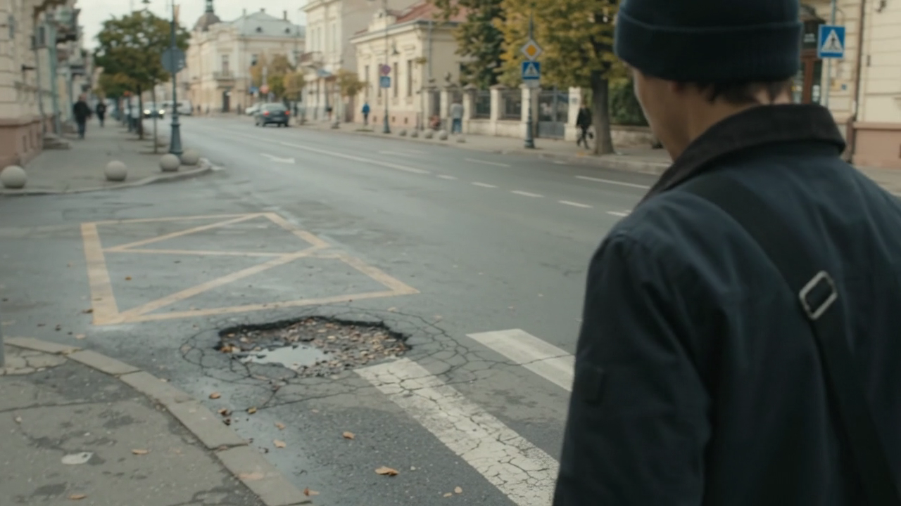

Între 112 și o petiție uitată 30 de zile există un gol periculos.
Iași SafeFlow transformă observațiile din trafic în dosare verificate și prioritizate pentru primărie — în ~45 de secunde, fără a încărca linia de urgență.
O groapă sau o trecere blocată fără răniți nu ține de 112, dar creează riscuri zilnice.
Sesizările dispersate pe email, telefon și Facebook generează zeci de duplicate neprioritizate.
Fără status public și fără recunoaștere, cetățenii renunță să mai raporteze.

PROBLEMA REALĂ ÎN TRAFIC • IAȘIDe pe stradă în dosarul Primăriei — fluxul real v0.4.1
Din 5 sesizări haotice → 1 dosar oficial prioritizat
Comunitate implicată real, accesibilă tuturor
Cine plătește, cât și de ce
Cetățeanul folosește gratuit. Clientul care plătește este Primăria (UAT).
Model unic: Abonament anual SaaS B2G poziționat sub pragul de achiziție directă SEAP (270.120 lei) — primăria poate contracta rapid, fără licitații de 9 luni.
De ce plătesc X: triajul manual consumă 6.000–9.000 lei/lună timp salarial, iar un singur dosar de daună auto costă primăria 10.000–35.000+ lei.
Motorul actual asistent-reguli-v2 are 0 lei cost API AI; cloud UE + stocare foto + geocodare = ~180 lei/lună/UAT (ipoteză).
Iași + ZMI: (1 mun. × 48k) + (24 UAT × 18k) = 480.000 lei/an
România: 103 mun. + ~350 orașe/comune mari = ~11,2 mil. lei/an
Primii 10 clienți: Comunele din Zona Metropolitană Iași (Miroslava, Valea Lupului, Ciurea, Rediu) prin pilot gratuit 60 zile → conversie SEAP.
Suma, folosirea ei și ce se întâmplă în 12 luni
2 piloți gratuiți ZMI + cadru GDPR
Multi-oraș + 3 UAT plătitoare
6 UAT active + SLA dispecerat
10 UAT (~17.5k lei/lună MRR*)
Deținut și dezvoltat integral de Echipa Synaptik. Fiind o echipă de minori, semnarea acordurilor de finanțare și a piloților este asigurată de reprezentantul legal adult (părinte / tutore legal desemnat); la conversia primelor abonamente B2G, opțiunea planificată este înființarea unui SRL cu administrator adult desemnat până la majorat.
Nu prezentăm doar idei — totul rulează deja în v0.4.1
Suite pytest trece complet: bariera 112, deduplicare TF-IDF, curățare EXIF JPEG/PNG/WebP, moderare comentarii, puncte anti-spam și audit log imutabil.
Auditat automat cu axe-core pe temele luminos, întunecat, contrast ridicat 7:1, text mare 1.3× și mod TalkBack pas cu pas.
Disponibil live pe iasi-safeflow.github.io și ca pachet instalabil iasi-safeflow.apk (v0.4.1) cu backend dedicat pe Render.
De la harta publică cu Zone frecvente și confirmări +1, la punctaj civic, comentarii moderate, foto fără EXIF și dosar oficial gata de înregistrat.
Trafic mai sigur în Iași, construit împreună.
Prototip funcțional astăzi pe telefon și web. Pilot B2G pentru primării și dispecerate mâine. Vă mulțumim — suntem gata pentru întrebări!